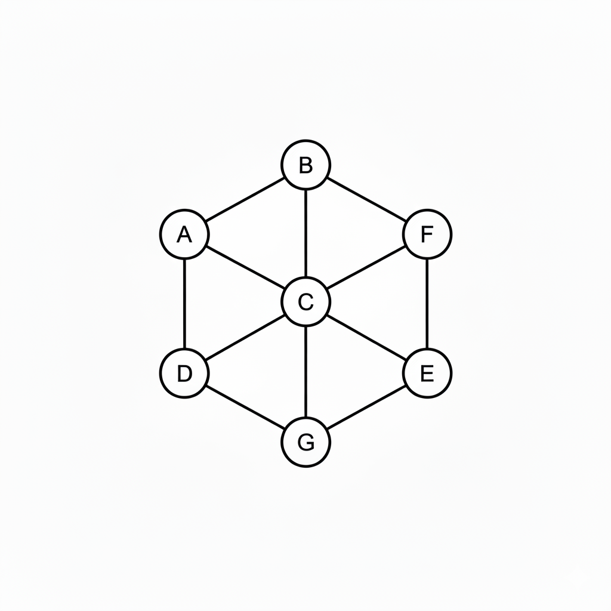
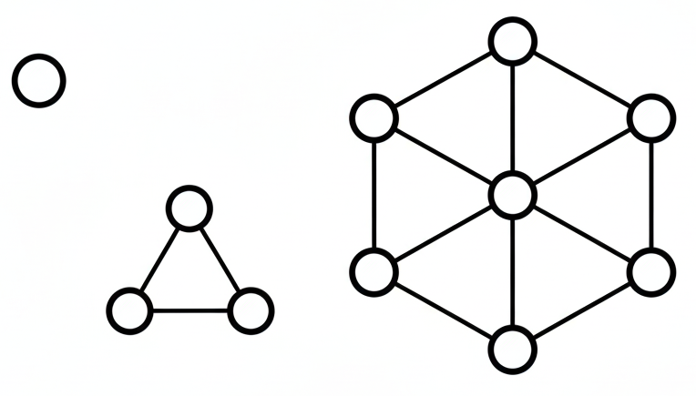
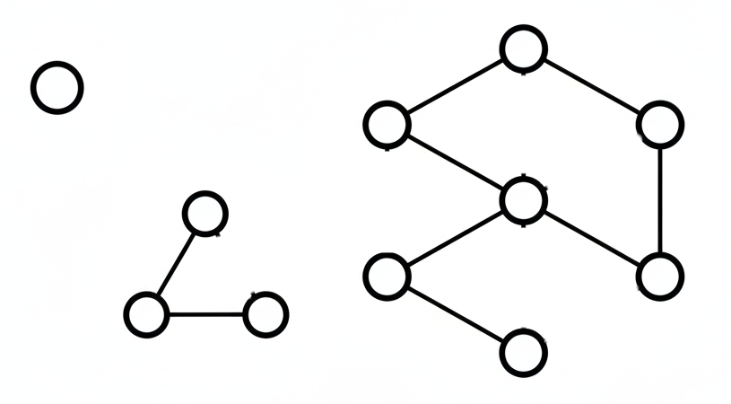
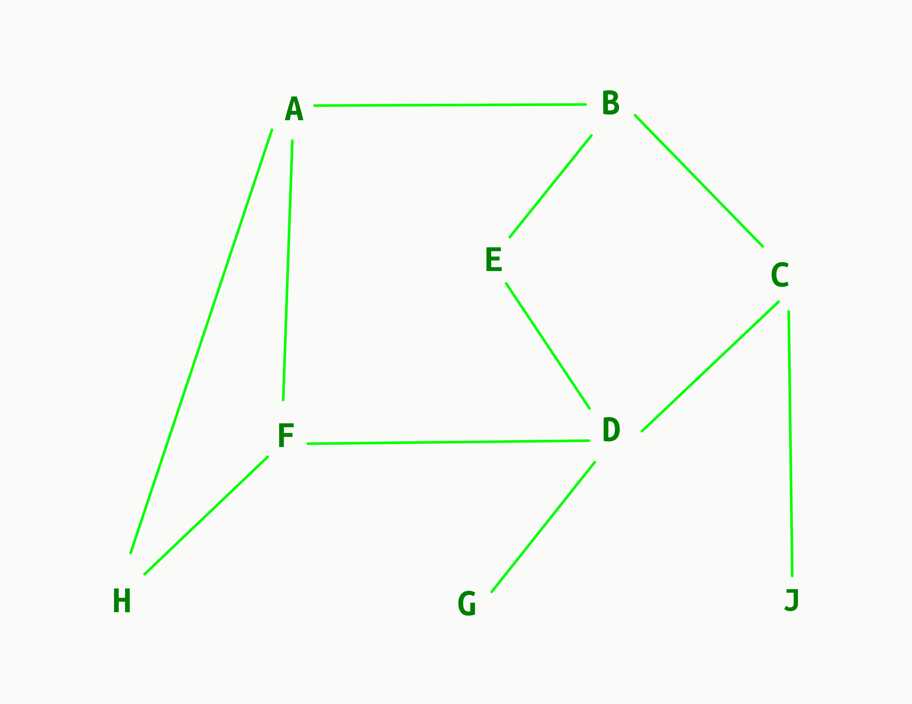
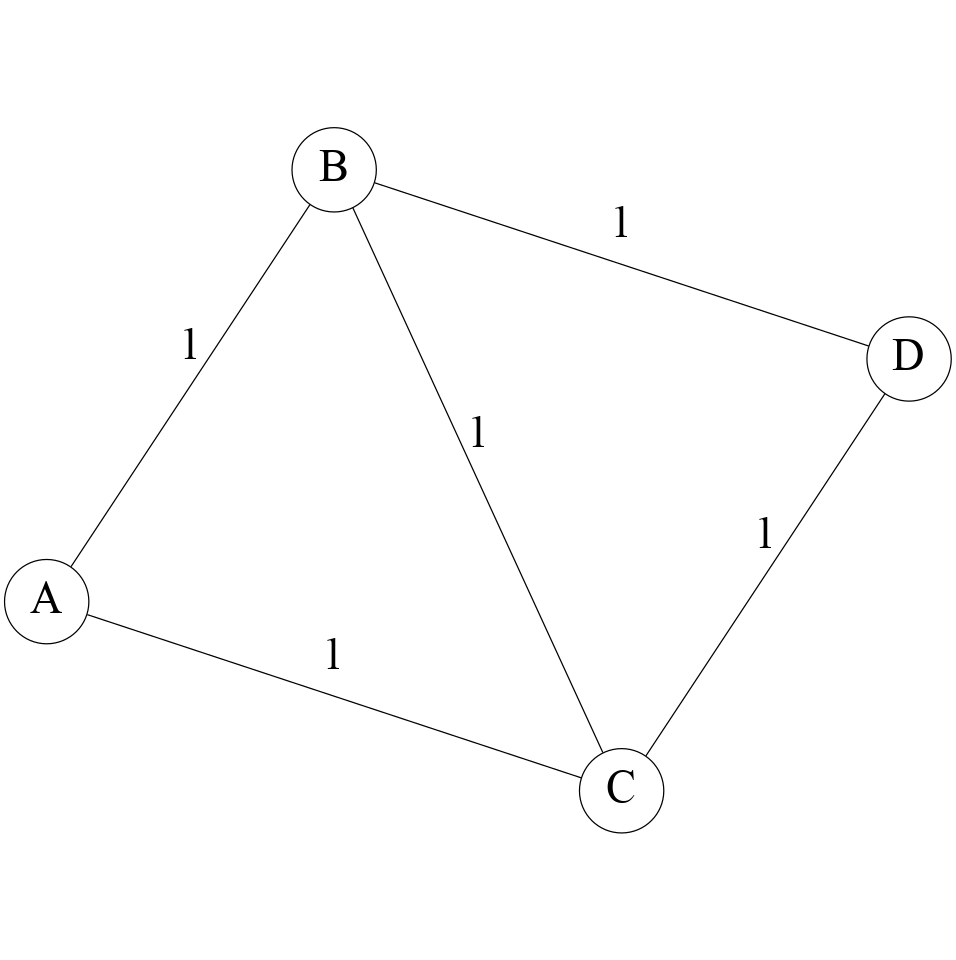
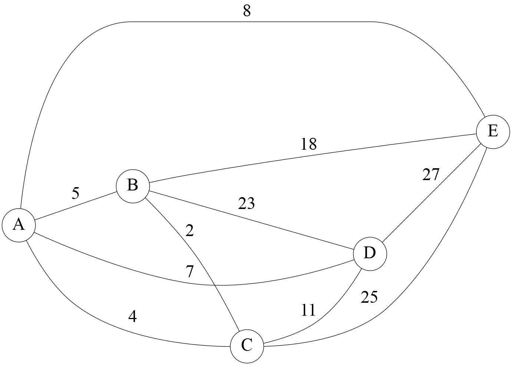
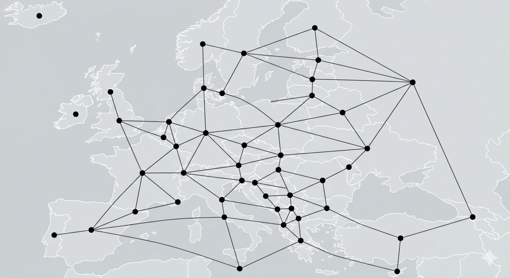

class: center, middle, title-slide # CSCI-UA 102 ## Data Structures <br> ## Graph Algorithms .author[ Instructor: Joanna Klukowska <br><br><br> ] .license[ Copyright 2025 Joanna Klukowska. Unless noted otherwise all content is released under a <br> [Creative Commons Attribution-ShareAlike 4.0 International License](https://creativecommons.org/licenses/by-sa/4.0/).<br> Background image by Stewart Weiss<br>] --- layout:true template: default name: section class: inverse, middle, center --- layout:true template: default name: breakout class: breakout, middle --- layout:true template:default name:slide class: slide .bottom-left[© Joanna Klukowska. CC-BY-SA.] --- ## Connected Components in a Graph A __connected component__ (or simply a component) of an undirected graph is a subgraph in which any two vertices are connected to each other by paths, and which is connected to no additional vertices in the supergraph. - In simpler terms, if you can get from any node in a component to any other node in the same component, and you can't get out of that component to another part of the graph, then it's a connected component. -- .left-column2[.center[ <p></p> ]] -- .right-column2[.center[ <p></p> <p></p> ]] --- ## Why do we care about connected components? -- __Social Network Analysis__: - Community Detection: Identifying groups of tightly knit individuals in a social network. Each connected component could represent a distinct community or isolated group. - Influence Propagation: If information or a virus spreads through a network, it will only spread within its connected component. This helps in understanding the potential reach of information or disease. - Identifying Disconnected Users: Finding users who are completely isolated from certain groups or the main network. -- __Network Reliability and Redundancy (Computer Networks)__: - Server Clusters: If a network representing server connections has multiple connected components, it means that some servers cannot communicate with others. This indicates a critical fault or partitioning in the network. - Resilience Planning: Understanding connected components helps in designing more robust networks by ensuring critical nodes are part of a well-connected component and identifying single points of failure that could split the network into multiple components. --- ## Why do we care about connected components? __Transportation and Logistics__: - Road Networks: Identifying if all cities or regions are reachable from each other. If the graph of roads has multiple connected components, it means some areas are completely isolated from others by road. - Airline Routes: Determining which airports are connected within a single airline's network or across multiple partner airlines. -- __Ecosystem Modeling__: - Habitat Connectivity: In ecological studies, graphs can represent patches of habitat and the corridors connecting them. Connected components identify areas where species can move freely, which is crucial for conservation efforts. - Disease Spread: Similar to social networks, understanding how connected components in an ecosystem relate to the spread of disease among animal populations. -- __and many more ...__ --- ## Finding Connected Components -- The most common algorithms to find connected components in a graph are Depth-First Search (DFS) and Breadth-First Search (BFS). Both algorithms can be adapted to identify all connected components. -- The general approach is as follows: - Initialize a `visited` array for all vertices to `false`. - Iterate through each vertex `v` in the graph. - If `v` has not been visited: - Start a DFS (or BFS) from `v`. This marks all vertices reachable from `v` as visited. - All vertices reachable from `v` during this traversal belong to the same connected component. - Store this set of vertices as a new connected component. Continue until all vertices have been visited. --- template:section # Shortest Path --- ## Shortest Path A __shortest path__ in a graph is the path between two vertices such that the distance (or sum of weights) along the path is minimized. - In an unweighted graph, the shortest path is simply the path with the fewest edges. - In a weighted graph, the shortest path is the one with the minimum total weight. -- Example Shortest path between two cities in a road network, where the weights represent distances, travel times, or the cost of tolls along the route. -- __What do you think is the shortest path from Warrent Weaver Hall to 60 Fifth Avenue?__ --- ## Shortest Path in an Unweighted Graph .right-column2[.center[ <p></p> ]] - Consider nodes A and D in the graph on the right. What is the shortest path from A to D? -- > There are several different paths from A to D, for example: - A -> B -> E -> D, - A -> F -> D, - A -> H -> F -> D, - A -> B -> C -> D. > The shortest path is the one with the fewest edges: A -> F -> D, which has 2 edges. -- __What do you think we can use to find the shortest path in an unweighted graph?__ --- ## Shortest Path in an Unweighted Graph To compute the shortest path in an unweighted graph, we can use Breadth-First Search (BFS) Traversal. - BFS explores all neighbors at the present distance from the starting node prior to moving on to nodes at the next distance level, ensuring that the first time we reach a node, we have found the shortest path to it. -- __But how do we actually keep track of that path while we are running the BFS?__ -- - We will need to keep track of the parent of each node. - The __parent node__ is the node from which we reached the current node during the BFS traversal. - The __parent array__ will store the parent of each node visited during the BFS traversal --- ## Shortest Path in an Unweighted Graph Here is a modified version of BFS that keeps track of the parent of each node and then retrieves the shortest path from the source to the destination node after BFS completes: ``` BFS(start, end): queue = [start] visited = empty list visited.add(start) parent = {start: None} while queue not empty current = queue.pop() if current == end //check if this is the destination node break for each neighbor of current if neighbor not in visited visited.add(neighbor) parent[neighbor] = current queue.add(neighbor) // reconstruct the path from start to end path = [] while end is not None: path.append(end) end = parent[end] path.reverse() return path ``` --- ## Shortest Path in a Weighted Graph The algorithms for finding the shortest path in a weighted graph are more complex than those for unweighted graphs. You will learn about them in the _Basic Algorithms_ class. --- template:section # Other Graph Problems --- ## The Traveling Salesman Problem (TSP) __What is TSP?__ - Problem Statement: Given a list of cities and the distances between each pair of cities, find the shortest possible route that visits each city exactly once and returns to the origin city. - Real-world Applications: - Logistics: Optimizing delivery routes for trucks. - Manufacturing: Minimizing the movement of robotic arms. - Tourism: Planning the most efficient sightseeing tour. - Graph Representation - Nodes (Vertices): Represent the cities. - Edges (Links): Represent the paths (distances) between cities. - Weighted Graph: Edges have weights representing the distances. --- ## TSP Example What is a possible TSP solution for this graph? Assume we start at node `A`? <p></p> -- A -- B -- D -- C -- A A -- C -- D -- B -- A --- ## TSP Example What is a possible TSP solution for this graph? Assume we start at node `A`? <p></p> -- A -- D -- C -- B -- E -- A --- ## Graph Coloring How many colors do we need to color a map so that no countries that share a border have the same color? <img width="600px" alt="simple graph with four nodes and all edges of weight 1" src="http://4.bp.blogspot.com/-kmwsRHp-sz4/TWDcs6KeBkI/AAAAAAAAAGA/mpU26WQAohE/s1600/blank_europe_map.gif"> --- ## Graph Coloring How many colors do we need to color a map so that no countries that share a border have the same color? <img width="600px" alt="simple graph with four nodes and all edges of weight 1" src="http://www.freeworldmaps.net/europe/europe-blank-map-countries-hd.jpg"> --- ## Graph Coloring How many colors do we need to color a map so that no countries that share a border have the same color? <p></p> --- </optgroup>